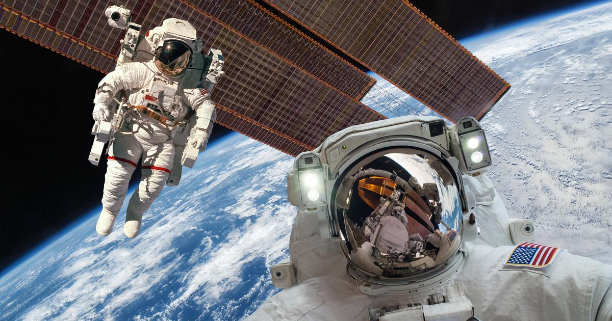

Jak to ujął oficer "Kosmos przypomina przyjemny, nieco słodki zapach wydobywający się podczas spawania". Wśród astronautów panują także inne opinie na temat zapachu kosmosu. Porównywany jest m.in. do sadzy i palonych opon, spalonego prochu strzelniczego, spalonego mięsa. Określany jest również jako "bukiet rozgrzanych metali". Wielu z was zapewne zastanawia się jak udało się dokonać pomiaru zapachu w kosmosie. Odpowiedź na to pytanie znalazłam na kilku obcojęzycznych portalach - Pettit obsługiwał komorę, dzięki której astronauci mogli opuszczać stację. Za każdym razem, gdy towarzysze wracali z kosmicznego spaceru, wyczuwał nietypowy zapach lecz nie potrafił sprecyzować skąd on dobiega. Okazało się wówczas, że podczas przebywania w kosmicznym środowisku skafandry i pozostały osprzęt wchłaniały z otocznia związki lotne, które podczas ściągania m.in. hełmów unosiły się w kabinie. Molekuły ulegały zmianom pod wpływem tlenu znajdującego się w kabinie, M.in. dlatego nie można dokładnie sprecyzować zapachu kosmosu. Myślę, że warto również dodać, że kosmiczna woń, która została opisana do tej pory dotyczy wyłącznie poznanej części kosmosu tj. miejsc dostępnych dla statków i sond kosmicznych wystrzelonych z Ziemi. Ponadto wszelakie galaktyki charakteryzują się innym składem chemicznym, a co za tym idzie każda z nich posiada własny, nie do końca określony zapach.

 powrót
powrót